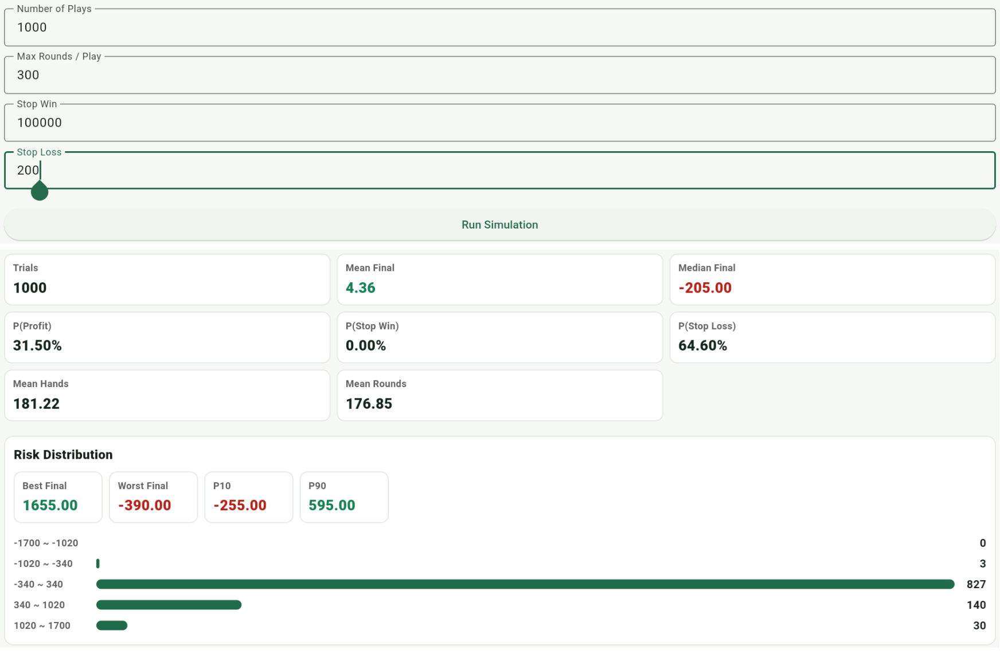

Theory and Reality
Card counting can create a small mathematical edge, but real play still has limits: table rules, penetration, table limits, bankroll, execution accuracy, and the risk of being noticed. Understanding these limits is more realistic than only knowing the Hi-Lo card values.
Counting Works in Theory, but the Conditions Matter
The point of card counting is not to predict the next card. It is to use the exposed cards to estimate the structure of the remaining shoe. When low cards have been removed and the remaining shoe has a higher density of high cards, the player gets better conditions for blackjack, doubles, insurance, and some deviations. That is when increasing the bet can make sense.
But the edge is usually small and depends on many conditions. The rules cannot be too poor, blackjack should ideally pay 3:2, penetration cannot be too shallow, and the player must execute basic strategy, counting, True Count conversion, and Bet Ramp decisions consistently. If several of these conditions are weak, the theoretical edge can disappear.
Table Rules Directly Affect Counting Value
Not every blackjack table is good for counting. A 6:5 blackjack payout heavily reduces player return. H17 is usually worse for the player than S17. DAS, Surrender, RSA, and other rule options also affect long-term expectation. Table limits matter as well because counting depends on raising bets at high True Count; if the max bet or practical bet spread is too restricted, the edge is hard to amplify.
If the table uses a CSM, or Continuous Shuffling Machine, traditional counting usually has little value. A CSM keeps mixing used cards back into the shoe, so exposed-card information expires quickly. That is very different from a normal shoe game where cards are dealt until the cut card before reshuffling.
Penetration Determines Whether Information Can Build Up
Penetration means how much of the shoe is dealt before reshuffling. Deeper penetration gives count information more time to accumulate and gives the player more chances to reach high True Count situations.
If the cut card is placed too early, the shoe is reset before the count can become very useful. Counting does not give an edge on every hand. Its value appears mainly in the smaller number of situations where the remaining shoe becomes favorable enough to justify larger bets.
The Edge Is Small, but the Variance Is Large
Movies often make counting look like a way to win a lot of money quickly. Real play is not like that. Even if a strategy is positive EV in the long run, it can still lose badly in the short term. Blackjack is a small-edge, high-variance game, and the results usually need many hands before they begin to resemble the expected value.
Positive EV does not mean you will win today, and it does not mean a given session will win. It only means that under suitable conditions, with enough hands and stable execution, the long-term average may favor the player.
Bankroll Matters More Than One Session
Counting requires more than knowing the math. It requires enough bankroll, meaning the capital pool reserved for play, to absorb variance. A larger Bet Ramp may improve long-term EV, but it also increases short-term swings. If the bankroll is too small, even a positive-EV strategy can fail before the long-term edge has time to appear.
Stop loss and take profit rules can change the distribution of one session and may feel closer to real play, but they do not turn negative EV into positive EV and they do not remove variance. This is why Session Stats are useful in addition to Round Stats.
App Simulation: Stop Loss 100 vs Stop Loss 200
The two Session Stats examples below use Hi-Lo, Bet Ramp 2/4/6/8/10, Base Bet 10, Max Round 300, and 1000 Plays. The only comparison here is the stop loss setting: one uses stop loss 100, and the other uses stop loss 200.


The stop loss 100 run ends earlier, with about 113 average rounds compared with about 177 rounds for stop loss 200. Its Stop Loss rate is also higher, about 82.1% versus 64.6%. Mean Final changes from -11.44 with stop loss 100 to +4.36 with stop loss 200.
This comparison does not mean a larger stop loss is automatically better. It shows why bankroll matters. If the capital pool is too small, a player may run out before reaching favorable high True Count situations, or lose early after only a few rounds, leaving the long-term counting edge without enough time to appear.
Counting Is Often Not a Short Solo Story
Many people learn about card counting from movies, where it can look like a few nights of play lead to a large profit. In reality, successful counting is usually closer to a large number of hands, team coordination, a sufficient bankroll, strict discipline, and fewer mistakes.
Team counting can observe more tables, generate more rounds, and use a shared bankroll to reduce the pressure of short-term swings on one player. Movies compress this process into a short story, so it looks like fast money. The important part is usually repeated volume, stable execution, and error control.
Execution Is More Real Than the Formula
At a real table, a player must track Running Count, estimate remaining decks, convert to True Count, choose a bet, and still make correct basic strategy and deviation decisions. Multiple players, fast dealing, distractions, pressure, and the emotion of losing streaks all increase mistakes.
For most learners, the hard part is not memorizing +1, 0, and -1. The hard part is executing the whole process under a rhythm close to real play. That is why practice, replay review, and mistake correction matter more than only memorizing formulas.
Being Noticed and Other Practical Limits
Card counting is usually not a crime, but casinos can refuse service or limit players. A very obvious bet spread, suddenly increasing bets only at high True Count, or winning steadily for a long time can draw attention.
So the real question is not only whether the math can maximize EV. It is also whether the strategy is executable, whether it is too obvious, whether the player can handle variance, and whether it fits local laws and venue rules.
Simulation Is Useful, but It Does Not Replace Training
Statistical simulation helps explain EV, ROI, SD, Bet Ramp, rule differences, and session result distributions. But reading simulation numbers does not mean the player can execute the strategy at the table.
For most learners, the important step is connecting strategy, counting, betting, mistake review, and statistical understanding. Simulation answers what the long run may look like. Training and Replay answer whether you actually made the right decisions.
How This App Fits In
This app does not present counting as guaranteed profit. It connects theory with practice. Decision Training reduces basic strategy and deviation mistakes. Running Count / True Count Drill builds calculation speed. Hi-Lo Count Drill and Game mode simulate a rhythm closer to real dealing. Replay checks betting, action, and insurance mistakes. Round Stats and Session Stats help explain long-term EV, variance, stop loss, take profit, and strategy comparisons.
Conclusion: Counting Is Not Guaranteed Profit
The value of card counting is not a guarantee of winning. Under suitable rules, enough penetration, a reasonable Bet Ramp, a sufficient bankroll, and stable execution, it may move an unfavorable game toward a small positive EV.
The difficult part is not the formula. It is making fewer mistakes over a long time, handling variance, controlling bet size, understanding limits, and keeping the whole process executable in real conditions. Learning card counting should not only ask whether it can win, but whether the player can actually execute the full workflow consistently.